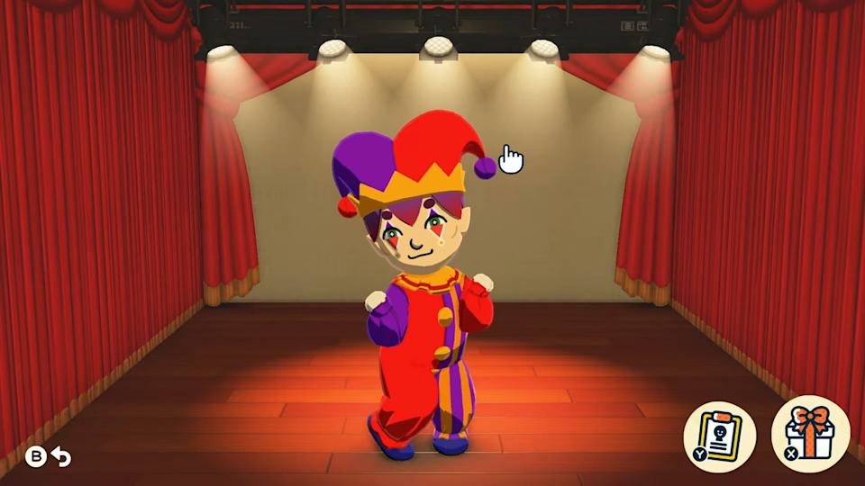

Tomodachi Life
Review by Ebony Lopez

Image credit: Nintendo / Tomodachi Life
Tomodachi Life is a life simulation game where players create Mii characters and watch them live together on an island. The game allows you to customize the Miis however you want, including their appearance, personality, voice, clothing, and relationships. Once the Miis move onto the island, they interact with each other in funny and unexpected ways. They can become friends, argue, fall in love, get married, and even have children.
One reason I enjoy playing Tomodachi Life is because it feels like a total freedom game. There are no strict goals or time limits, so you can play however you want and create your own stories. I like being able to make characters based on real people, celebrities, or completely original ideas and then seeing how they interact.
The game is relaxing because it lets players be creative and make choices without pressure. At the same time, the unexpected events and funny conversations keep the game exciting and unpredictable, which is why it remains one of my favorite games to play.